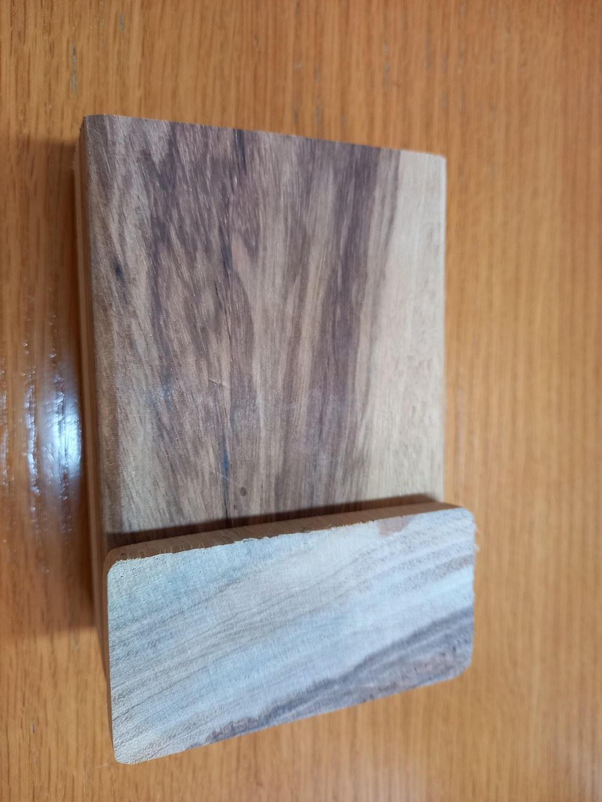

MARUMOKU COFFEEは、宮崎県高千穂町の三田井にあるテイクアウト専門のコーヒー店です。スペシャルティコーヒーと焼き菓子を扱っています。
屋号は、奥様のご実家の木工所に由来すると報じられています。木工所のロゴは、円の中に木が立つかたち。木工所がお父様の代で終わってしまうため、「名前だけでも私たちが継ぎたい」という想いで付けたそうです。
お二人は2020年に地域おこし協力隊として高千穂へ。奥様は高千穂のご出身で、子どもの頃から地元でお店を開くのが夢だったと伝えられています。コーヒーは豆ごとに味わいが違うこと、そして相性のよい焼き菓子の魅力を届けたい、という想いです。
上記は地域報道(日向経済新聞)で確認できた内容です。お店の公式な説明ではありません。
